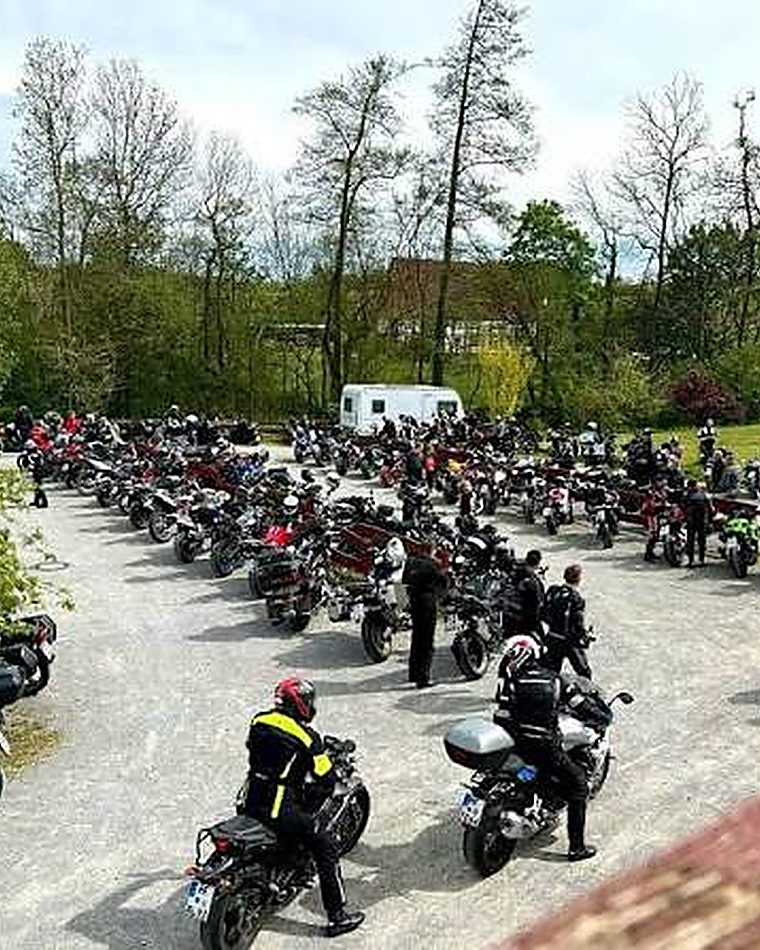

Bikerfreunde Castrop-Rauxel · seit 2003
Seit 2003 fahren wir die schönsten Kurven Deutschlands.
Motorradfreunde aus dem Ruhrgebiet. Geführte Touren durch Sauerland, Mosel, Eifel und die Alpen. Entspannt statt gehetzt.

20+
Jahre auf Tour
2003
der erste Kilometer
12
Regionen im Roadbook
1
Grundsatz: fahren, nicht rasen
Wir wollen fahren. Nicht rasen.
Was 2003 mit ein paar Freunden aus Castrop-Rauxel begann, ist heute eine feste Gemeinschaft. Gemeinsame Ausfahrten, kein Vereinszwang, keine Rekordjagd.
Der Kern fährt weiter, Wochenende für Wochenende, Saison für Saison. Sicher unterwegs in der Gruppe, mit Spaß an der Kurve statt am Tempo.

Das Roadbook
Regionen, die wir im Schlaf fahren.
Über zwanzig Jahre Touren, dokumentiert Kurve für Kurve. Wisch dich durch die Reviere.
Eine Route, die sich seit 2003 schreibt.
2003
Die ersten Bikerfreunde aus Castrop-Rauxel finden sich zur ersten gemeinsamen Ausfahrt.
2008
1000 und 1 Kurve. Die Touren werden länger, das Sauerland zum Wohnzimmer.
2013
Die Bikerwochenenden an der Mosel werden zur festen Tradition.
2018
Mit dem Motorrad über die Dolomiten. Das bislang größte Abenteuer.
2024
Neue Gesichter, gleicher Grundsatz. Die Gruppe stellt sich frisch auf.
2026
Die Saison geht weiter. Die nächste Kurve wartet schon.
Shop
Trag die Farben.
Grün und Gold, auf und neben der Straße.
Polo-Shirt
Das Vereinsshirt in Grün mit gesticktem Wappen.
Warnweste
Sichtbar in der Gruppe, erkennbar auf jeder Tour.
Aufkleber
Das Wappen für Tank, Koffer und Helm.